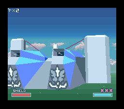
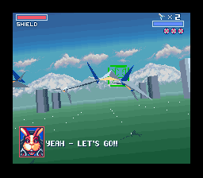
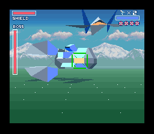

Sunlit's Place
Sunlit's Place
 Links
Links ROMHacks
ROMHacks Artwork
ArtworkROMHacking Portfolio
This page lists all my work on ROMHacking projects over the years, along with anything Monika also worked on with me.
Most of my work centers around the SNES and Star Fox (1993), but I do occasionally work with other games and consoles.
Contents:
Major Hacks
-
[SNES] Star Fox EX
Period of Creation: c. July 2020 - present
Released: November 8, 2022
Game Modified: Star Fox (1993)


Basically, this hack adds a whole second campaign while still including the original (about 95% intact), with a TON of customizable options. It also supports several peripherals (e.g. SNES mouse, Super Scope, NTT Data Pad).
I worked on this hack as part of a team of several others, led by the amazing Kandowontu.
I learned how to program in 65816 (and some Super FX) assembly while working on this project.
The experience I gained from this project allowed me to go forward and make my own Star Fox hacks.
Work I did for this hack:- Programming - mostly bugfixes, with some new features
- Toolchain engineering - making the build process easier, etc.
- Tools - I made new graphics and modelling tools for use in this project and other Star Fox hacks
- Testing - self explanatory
- Ideas - self explanatory
- 3D modelling - custom ship, optimizing shapes
- Graphics - character mugshots (replaced in 1.11.02, now optional), and other misc. GFX work
- Instruction manual authoring - self explanatory
- Programming - helped me with programming, caught mistakes, etc.
- 3D modelling - custom ships
-
[SNES] Star Fox CD
Period of Creation: July 8, 2023 - present
To be Released: When it's done
Game Modified: Star Fox (1993)
A major Star Fox hack with an all-new campaign, 2 new teammates (Miyu and Fay from Star Fox 2), CD quality music provided by the MSU-1 (hence the title), and rumble support via Randal Linden's SNES rumble spec.
Work I have done for this hack:- Programming - MSU-1 programming, rumble controller support (rumble system developed by me alongside Kandowontu and the equally amazing Randal Linden)
- Toolchain engineering - toolchain had to be reworked to fit the needs of the project
- Tools - some extra ones purpose-built for this project specifically, along with the GFX and modelling tools also used in Star Fox EX
- Testing - self explanatory
- 3D modelling - props, ships, etc.
- Level design - self explanatory
- Graphics - a lot of new graphics, and several changed
- Text - new planet names and mission briefings, new dialogue
- Programming - helped me with programming, ideas, caught mistakes, etc.
- 3D modelling
Minihacks
-
[SNES] Untitled Star Fox Minihack
Period of Creation: November 11-12, 2022
Released: November 12, 2022
Game Modified: Star Fox (1993)
A mini Star Fox hack I made in 2 days to learn how to edit levels.
Later remastered as Sunlit's Untitled Star Fox Minihack DX (2025).
Work I did for this hack:- Level design - self explanatory
- Testing - self explanatory
- Graphics - new map screen and planet icons
- Text - new planet names and mission briefings
-
[SNES] Untitled Star Fox Minihack 2: Quest for the $19 Fortnite Card
Period of Creation: November 14, 2022 - July 3, 2023
Released: July 3, 2023
Game Modified: Star Fox (1993)
The sequel to the first minihack. More custom levels, and lots of new dialogue.
Work I did for this hack:- Level design - self explanatory
- Testing - self explanatory
- Graphics - new map screen and planet icons, Star Fox 2 character mugshots
- Text - new planet names and mission briefings, new dialogue
- Moral support
- Playtesting
- Ideas
-
[SNES] Sunlit's Untitled Star Fox Minihack DX
Period of Creation: March 19, 2025
Released: March 19, 2025
Game Modified: Star Fox (1993)
The remaster of my first minihack. I wanted to take what I had learned up to this point and polish up one of my very first Star Fox hacks.
Work I did for this hack:- Level (re)design - self explanatory
- Programming - some tweaks to make the game play a little better
- Testing - self explanatory
- Graphics - new map screen and planet icons, new planet backgrounds, briefing background, Star Fox 2 character mugshots, title screen
- Text - cleaned up text from the original version
- Programming
- Graphics
-
[SNES] Star Fox - Boss Test A
Period of Creation: c. February 2024
Released: February 5, 2024
Game Modified: Star Fox (1993)
A creepypasta hack Kando made to practice working with the Star Fox code after a while of working on Famidash.
I did some graphics, and Random did the music.
Work I did for this hack:- Graphics - various graphics for the different "creepy levels"
-
[SNES] Miyu and Fay in Star Fox
Period of Creation: April 28, 2024 - September 22, 2024
Released: September 22, 2024
Game Modified: Star Fox (1993)
"Phase 1" of the development of Star Fox CD, implementing the new teammates. It seemed like a waste to not release this as a standalone thing, so I did.
I did the programming and GFX along with Monika, Kando tested the game and provided feedback, and Joshua Schaeferhund wrote the new dialogue.
Work I did for this hack:- Programming - implementing Miyu and Fay
- Graphics - new character mugshots, title screen
- Programming
- Moral support
-
[SNES] Star Fox - Christmas 2023
Period of Creation: December 25, 2023
Released: December 25, 2023
Game Modified: Star Fox (1993)
A simple christmas themed Star Fox hack I made for fun.
It's snowing on Corneria, and Slippy is wearing a Santa hat.
Work I did for this hack:- Graphics - Corneria background, Slippy mugshot, title screen palette swap
-
[SNES] Doom II MAP01 + MAP02 SNES
Period of Creation:
June 12, 2024 (original version)
September 18, 2024 (MSU-1 BGM + improvement patch changes)
Released: June 12, 2024
Game Modified: Doom (SNES, 1995)
This is the hack that really put me on the map, as much as I'd rather it not be (thanks, Time Extension).
Fun fact: Randy Linden (The guy who made SNES Doom 1995/2025 happen) found out I existed through me getting the recently dumped complete source code to assemble and releasing this hack.
It's the first 2 maps of Doom II: Hell on Earth (1994) ported to the Reality Engine (SNES Doom '95), just for fun as a demo of what Randy's full source+toolchain can do.
For the last time, I'm not doing the full game, but I did hear Randy say that if the new version sells well, Doom II for SNES might happen...
Work I did for this hack:- Programming - tweaks for Doom II map set
- Level porting - self explanatory
Small Patches
-
[SNES] Star Fox 64 Style HUD
Period of Creation: December 5, 2021 - December 29, 2023
Released: December 7, 2021
Game Modified: Star Fox (1993)
 A Star Fox patch that makes the HUD resemble something closer to Star Fox 64, with optional Star Fox 2 mugshots for the characters, developed with help from Kandowontu.
Code from this was later reused in Star Fox CD.
Work I did for this hack:- Programming - implementing new HUD layout, boss bar drawing routine reprogramming for v3.0
- Graphics - new HUD layout, Star Fox 2 mugshots, slight gamepal tweak for Slippy
-
[SNES] Star Fox MSU-1 (UltraStarFox Port)
Period of Creation: c. December 2023
Released: December 22, 2023
Game Modified: Star Fox (1993)
Kando and I reverse engineered Kurrono's MSU-1 patch for Star Fox and implemented it into UltraStarFox.
I went ahead and assembled ROMs for every region of the game with Fast/SlowROM and 10.7/21.4mhz Super FX speed and released it.
Work I did for this hack:- Programming - MSU-1 patch RE
-
[SNES] Star Fox 2 NTSC to Starwing 2 PAL
Period of Creation: c. August 2022 - August 6, 2024
Released: August 4, 2022
Game Modified: Star Fox 2 (1995/96, 2017)
The Star Fox 2 source code had all the adjustments for PAL implemented (minus the music, which was missing).
This patch is the game reassembled to target PAL with a Starwing 2 title screen and matching ROM header name.
Work I did for this hack:- Programming - putting up with Star Fox 2's nonsense
- Graphics - Starwing 2 logo (originally by josete2k, cleaned up by me)
-
[SNES] Star Fox 2 Improvement Patch
Period of Creation: August 6, 2024
Released: August 6, 2022
Game Modified: Star Fox 2 (1995/96, 2017)
A patch that fixes some graphical/text mistakes and provides some improvements (e.g. you can change view in space with SELECT, optional patches to enable homing shots from the start).
It also includes PAL builds with the proper optimizations and Starwing 2 branding.
Work I did for this hack:- Programming - putting up with Star Fox 2's nonsense to implement the gameplay changes (view change with SELECT in space, optional homing by default)
- Text - correcting typos
- Graphics - all graphical fixes (except the titania name fix, SegaRetro92 did that), Starwing 2 logo (originally by josete2k, cleaned up by me)
-
[SNES] Doom SNES Improvement Patch
Period of Creation: September 16 - September 18, 2024
Released: September 16, 2024
Game Modified: Doom (SNES, 1995)
A patch that provides improvements for SNES Doom.
Work I did for this hack:- Programming - implementing all the improvements, fixing Hyperkin mouse compatibility bug
-
[SNES] Doom SNES MSU-1
Period of Creation: July 2 - September 18, 2024
Released: July 2, 2024
Game Modified: Doom (SNES, 1995)
A patch that adds MSU-1 music support to SNES Doom, plus all the changes from the improvement patch.
Work I did for this hack:- Programming - implementing MSU-1 support, all the improvements, fixing Hyperkin mouse compatibility bug
-
[N64] Star Fox 64 - Better Cockpit View
Period of Creation: January 5, 2025
Released: January 5, 2025
Game Modified: Star Fox 64 (1997)
A patch made with the SF64 decompilation that changes the cockpit mode to something closer to that of Star Fox (1993).
Work I did for this hack:- Programming - modifying cockpit view code
-
[N64] Super Mario 64 Monika Mode
Period of Creation: January 30 - February 1, 2023
Released: January 30, 2023
Game Modified: Super Mario 64 (1996)
A patch made with the SM64 decompilation inspired by Kando's "Kando Mode" series of patches that adds a bunch of fun cheats and features to Super Mario 64.
Work I did for this hack:- Programming - self explanatory
- Hack name - lol
-
[SNES] Assault Suits Valken (World) (Switch) Crack
Period of Creation: December 10, 2023
Released: December 10, 2023
Game Modified: Assault Suits Valken / Cybernator (1992)
The Switch release of the new ASV translation had a very rudimentary form of copy/emulation protection: they garbled a handful of instructions to make the game crash and reboot at the beginning of the first stage.
Using a ROM dumped from the SNES cartridge version of the same translation, I was able to disassemble the two, find the differences, and 'crack' the Switch version.
Work I did for this hack:- Disassembly - to find the breaking changes
- Programming - inserting the fix for reassembly
-
[SNES] Star Fox Shindou Edition
Period of Creation: June 23, 2025 - July 17, 2025
Released: July 17, 2025
Game Modified: Star Fox (1993)
The original Star Fox, now with rumble support via Randal Linden's SNES rumble controller!
Developed alongside Kandowontu and the amazing Randal Linden.
Work I did for this hack:- Programming - "flat rate" rumble system programming, rumble effect programming
ROMHacking Bases
-
[SNES] UltraStarFox
Period of Creation: December 7, 2021 - present
Available: Since December 7, 2021
Based on: Star Fox (1993)
A Star Fox source code repo that makes the game easier to edit for ROMHackers. It also adds a TON of customizable options via its configuration includes, among many more improvements and fixes, as well as support for newer cartridge hardware (Super FX 1/2/3), FastROM, the MSU-1 expansion audio chip (to be rewritten), and the SNES mouse and rumble controller.
Maintained by me, developed in collaboration with several others.
Work I did for this project:- Maintaining - self explanatory
- Programming - a lot of stuff (e.g. MSU-1 patch RE, "flat rate" rumble system)
- Graphics - GFX bugfixes, German version GFX restoration
- Text - message file restructuring, German script restoration
- Toolchain engineering - rewrote build system and restructured source code filesystem for easier editing
- Documentation - self explanatory
- Tools - several tools included in this repo were made by me